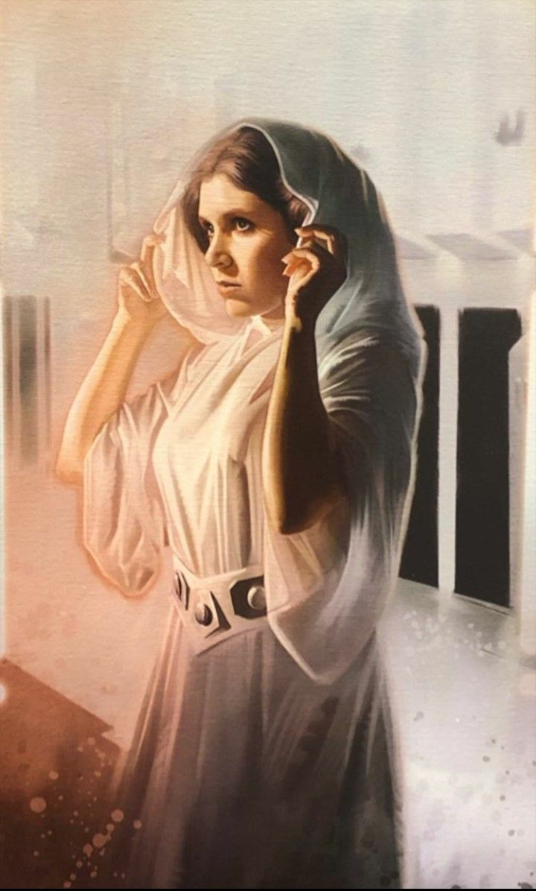
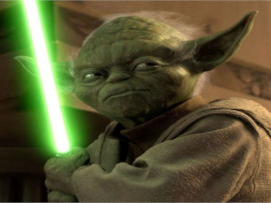
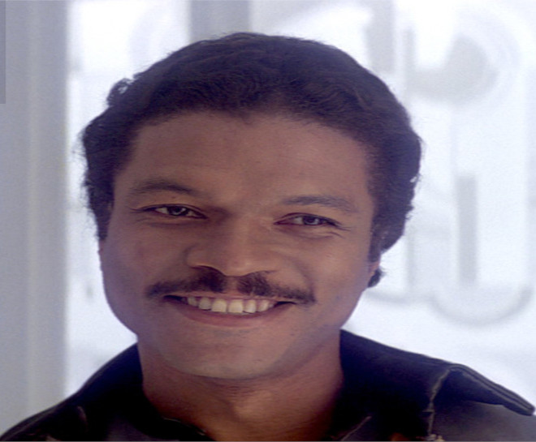
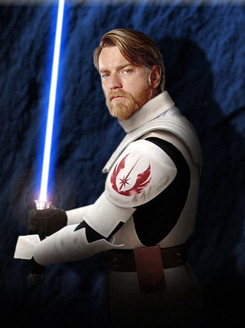
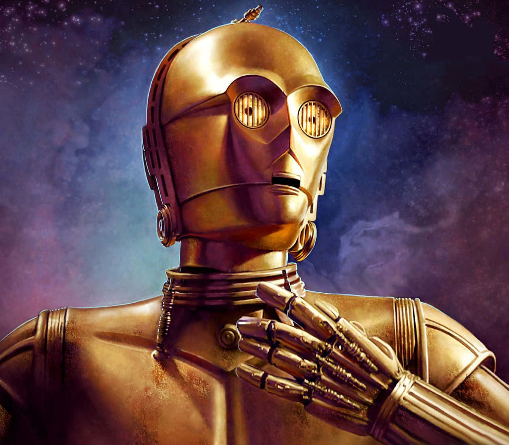
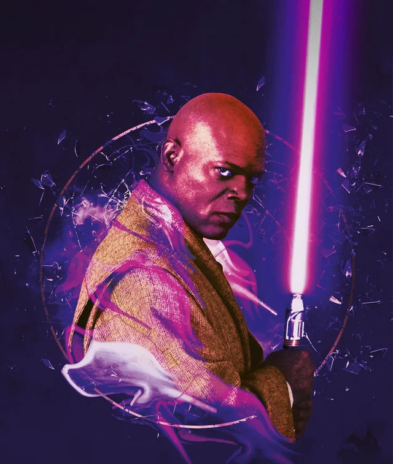

Personnages
L'univers de Star Wars est peuplé de personnages emblématiques qui ont marqué des générations de fans. Des courageux Jedi comme Luke Skywalker et
Obi-Wan Kenobi aux redoutables Sith tels que Dark Vador et Dark Sidious, chaque personnage joue un rôle clé dans l'affrontement entre le bien et le mal.
Les héros de la Rébellion, comme la Princesse Leia et Han Solo, luttent contre l'Empire. Ici sont répértoiriés les personnages les plus intéressants.
Notons que les personnages et la chronologie du VII, VIII, IX, ne seront pas présent car c'est de la daube.

Nom : Leïa Organa
Race : Humanoïde
Profession : Général des armées de la Rebéllion
Statut : Vivant
Citation : "Au secour Obi-Wan Kenobi, vous êtes mon seul espoir."
Nom : Han Solo
Race : Humanoïde
Profession : Contrebandier
Statut : Vivant
Citation : "Il suffit que je m'absente un instant pour qu'ils aient tous la folie des grandeurs."
Nom : Dark Vador
Race : Plus une machine qu'un homme
Profession : Bras droit de l'Empereur et Seigneur Sith
Statut : Mort
Citation : "Luke, je suis ton père."

Nom : Yoda
Race : Inconnu
Profession : Jedi
Statut : Mort
Citation : "Fais le, ou ne le fait pas, mais il n'y a pas d'essais."

Nom : Lando Calrissian
Race : Humanoïde
Profession : Contrebandier, Ambassadeur des mines de Bespin
Statut : Vivant
Citation : "Han ! Vieux pirate !"

Nom : Obi-Wan Kenobi
Race : Humanoïde
Profession : Jedi
Statut : Mort
Citation : "Hello There !"
Nom : Dark Sidious
Race : Humanoïde
Profession : Empereur et Seigneur Sith
Statut : Mort
Citation : "Ta trop grande confiance en tes amis sera ta perte."
Nom : R2-D2
Race : Droïde
Modèle : Astromécano
Citation : "Bip biiiiip."

Nom : C-3PO
Race : Droïde
Modèle : Droïde protocolaire
Citation : "Oh seigneur..."

Nom : Mace Windu
Race : Humanoïde
Profession : Jedi
Statut : Mort
Citation : "Mais était-ce le maître, ou l'apprentis ?"